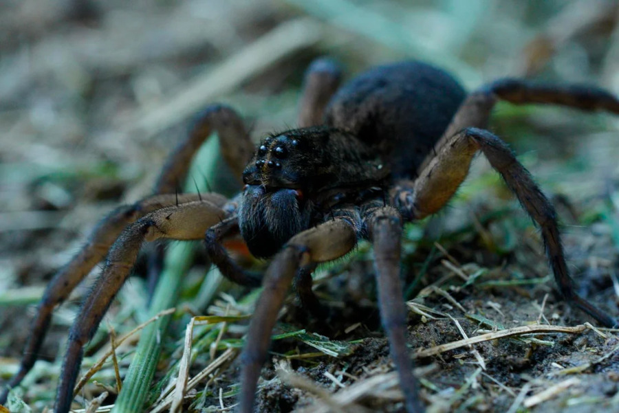

The documentation below will not display the empty rule, and split the evalation steps from the program.
Thue is a string-rewriting system.

A Thue program consists of two parts: a list of substitution rules, made of left and right sides separated by the spider operator(::=), terminated by an empty rule
with both sides empty, followed by a string representing the
initial program state:
left::=right a rule ::= an empty rule [left] the initial state
[right] the result
Execution consists of picking, from the list of rules, an arbitrary rule whose original string exists as a substring somewhere in the program state, and replacing that substring by the rule's replacement string. This process repeats until there are no rules that can be applied, at which point, the program ends.
Logic
Logic in Thue is defined by creating rules for the different states of the permutation of cases.
(or T T)::=T (or T F)::=T (or F T)::=T (or F F)::=F
(or (or T T) F) (or T F) T
Numbers
|, for 1||, for 2|||, for 3||||, for 4
There are no number systems built into Thue, but we can represent numbers as tally marks. For example, to get the sum of two numbers using tally marks, we can remove the operator to concatenate the two numbers(3 + 5):
+ ::=
||| + ||||| ||||||||
To get the difference of two numbers using tally marks, removing a mark from each side of the operator gives the result(5 - 3):
| - |::= -
||||| - ||| |||| - || ||| - | || -

Iterators
Iterators are not too different from tally marks, they can be cyclical(0, becoming 1, becoming 2, etc) or generalized and growing in size, to make a counter that waits for 8 ticks and expand over a length of memory:
.::=* *wait::=*done
.....wait *....wait **...wait ***..wait ****.wait *****wait *****done
Loops
Nested loops can be done in the style of Fractran, but since rules are evaluated in a non-deterministic fashion, boundaries cannot be generalized(year year year..), instead use specific tokens:
spring::=summer summer::=autumn autumn::=winter winter year1::=spring year2 winter year2::=reached
spring year1 summer year1 autumn year1 winter year1 spring year2 summer year2 autumn year2 winter year2 reached
Physics
Operating a rewriting system such as this one is sometimes akin to creating a physics engine where you move a cursor across the world, colliding along the way with places in memory to operate on.
>.::=.> >|::=*| *|::=.|
>....| .>...| ..>..| ...>.| ....>| ....*| .....|
Printing
Whenever the RHS of a rule begins with a tilde(~), the text to its right is sent to the output stream.
print::=~Hello World!\n ::= [print]
[print] []
Hello World!
Random
Rules are chosen randomly, making it possible, for example, to make a dice rolling program that might result in any of the possible values of a 6 sided die:
%text,::=~You rolled: %dice::=~1. %dice::=~2. %dice::=~3. %dice::=~4. %dice::=~5. %dice::=~6. ::= %%text,dice
%%text,dice %dice
You rolled: 3.
To finish off, Sierpinski's triangle in Thue.
#::= X::=~_ Y::=~* Z::=~\n _.::=._X _*::=*_Y ._|::=.Z-| *_|::=Z ..-::=.-. **-::=*-. *.-::=*-* .*-::=.-* @.-::=@_. @*-::=@_* ::= @_*...............................|
Enjoy playing with Thue, and be careful.
It is pitch black. You are likely to be eaten by a Thue.

- Interpreter, written in Uxntal. Video
- Wiki page, Esolangs
- Chatroom, Discord
- Thue, Cat's Eye Technologies.